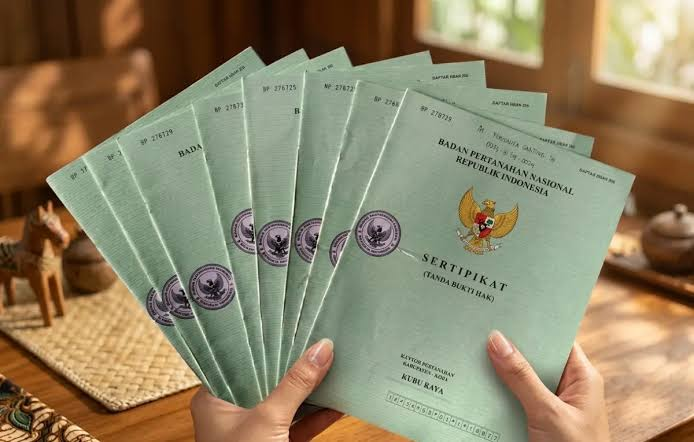
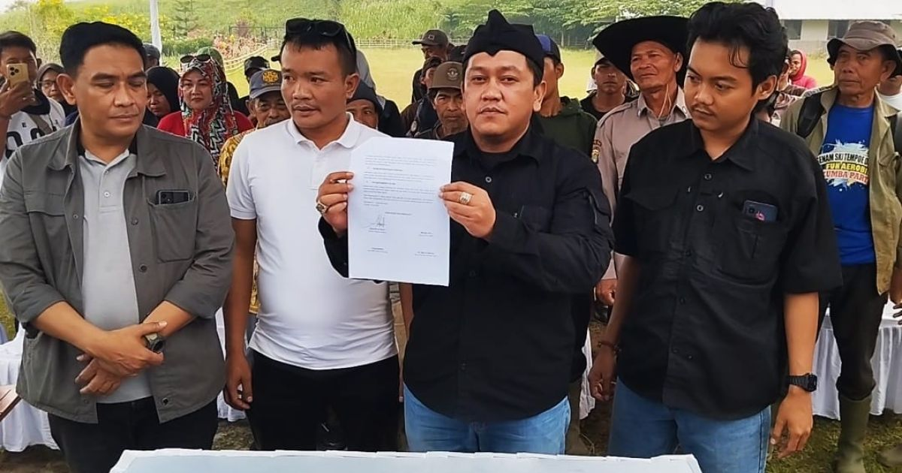

Hukum Pidana
Pendampingan dan pembelaan dalam perkara pidana.
Selayang Pandang
Hukum hadir untuk melindungi hak, memberi kepastian, dan membuka jalan bagi keadilan yang lebih baik.
Pendampingan hukum yang jelas, jujur, dan berorientasi pada solusi.
Hubungi Saya →Keahlian
Pendampingan dan pembelaan dalam perkara pidana.
Penanganan sengketa dan persoalan hukum antarindividu maupun badan hukum.
Pendampingan persoalan hukum keluarga, hak, dan pembagian waris.
Penanganan sengketa tanah, kepemilikan, dan transaksi properti.
Pendampingan hukum usaha, perusahaan, dan hubungan bisnis.
Pendampingan sengketa terkait keputusan dan tindakan administrasi pemerintahan.
Tentang Saya
Setiap orang yang datang dengan persoalan hukum memiliki cerita dan kebutuhan yang berbeda.
Saya percaya bahwa hukum bukan hanya tentang aturan, tetapi tentang manusia, keadilan, dan masa depan yang lebih baik.
Saya pun percaya, pendampingan hukum yang baik dimulai dengan mendengarkan, memahami situasi, dan melihat persoalan dari berbagai sisi.
Bersama klien, saya berupaya menemukan langkah yang tepat melalui pertimbangan hukum yang cermat, komunikasi terbuka, dan pendekatan yang bertanggung jawab.
Pengalaman Profesional
Pendidikan
Pengalaman Perkara


Alur Konsultasi
Setiap langkah dimulai dengan memahami persoalan Anda. Kami akan membantu mengarahkan prosesnya secara bertahap.
Sampaikan situasi dan permasalahan yang sedang Anda hadapi.
Informasi dan dokumen dipelajari untuk memahami posisi hukum Anda.
Diskusikan alternatif penyelesaian dan pertimbangan hukumnya.
Jika diperlukan, tentukan ruang lingkup dan bentuk pendampingan lebih lanjut.
LEGAL QUOTE
“ Justice is not only the application of the law, but the protection of human dignity and rights
Frequently Asked Questions
Beberapa informasi awal untuk membantu Anda memahami proses pendampingan hukum.
Proses dimulai dengan penyampaian gambaran permasalahan hukum, kemudian dilanjutkan dengan pembahasan mengenai kebutuhan dan langkah yang dapat dipertimbangkan.
Sebaiknya hubungi terlebih dahulu untuk mengatur jadwal konsultasi agar waktu dan kebutuhan Anda dapat dipersiapkan dengan baik.
Biaya bergantung pada jenis permasalahan, tingkat kompleksitas, ruang lingkup pekerjaan, dan kebutuhan pendampingan. Rincian dapat dibahas setelah kebutuhan diketahui.
Informasi dan dokumen yang disampaikan dalam proses konsultasi perlu ditangani secara profesional dengan memperhatikan kewajiban kerahasiaan yang berlaku.
Dokumen disesuaikan dengan jenis permasalahan. Anda dapat menyiapkan kronologi singkat dan dokumen pendukung yang relevan untuk pembahasan awal.
Konsultasi online dapat dibicarakan terlebih dahulu untuk menyesuaikan kebutuhan, jadwal, dan metode komunikasi yang tersedia.
Diskusi Permasalahan Hukum